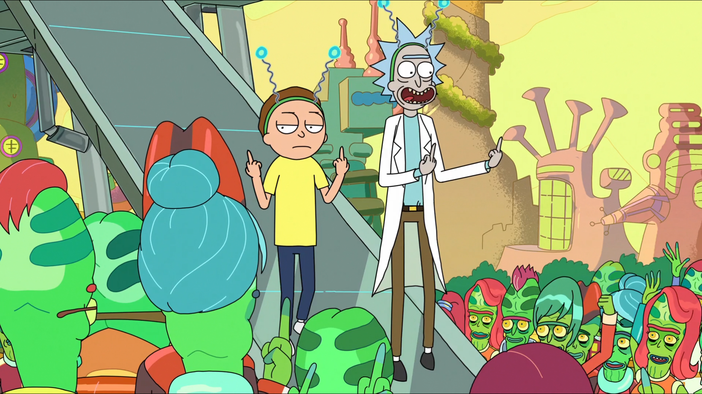

Sobre o seriado

Viagens Cósmicas: Uma Odisseia de Rick e Morty
“Rick e Morty” é uma série de animação que desafia os limites da realidade e da moralidade. A série segue as aventuras do cientista gênio, porém alcoólatra, Rick Sanchez e seu neto bem-intencionado, porém facilmente manipulável, Morty Smith.
Juntos, eles embarcam em viagens interdimensionais, explorando universos paralelos, enfrentando alienígenas bizarros e lidando com as complexidades da vida familiar.A série é conhecida por seu humor negro, comentários sociais afiados e representação irreverente da física quântica.